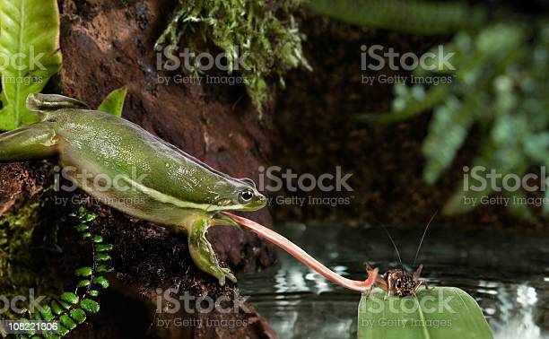

Diferença entre cadeia e teia alimentar
Na cadeia alimentar as setas seguem apenas um sentido e indicam o fluxo de energia. Nessa representação é possível perceber a posição ocupada por cada ser vivo, ou seja, seu nível trófico.
Já em uma teia alimentar, existem várias setas que indicam as interações entre os seres, ou seja, as conexões entre as cadeias, assim como ocorre em um ecossistema, pois um ser vivo pode se alimentar de muitos outros.
Por exemplo, um camundongo pode fazer parte de duas cadeias alimentares, pois serve de alimento para cobras e raposas.
Além disso, a posição de um ser em uma teia alimentar, ao contrário do que acontece em uma cadeia alimentar, não é fixa. Por exemplo, uma onça e uma raposa podem se alimentar de um coelho.Nestes casos, as cadeias alimentares seriam:
Cadeia com 3 seres: Plantas → coelho → onça Cadeia com 4 seres: Plantas → coelho → raposa → onça
Note que no primeiro exemplo a onça é um consumidor de segunda ordem e no segundo/exemplo este predador é um consumidor de terceira ordem.
Exemplos de cadeia alimentar
- vegetais - camundongo - cobra - águia
- vegetais - coelho - raposa - onça
- vegetais - gafanhoto - lagarto - águia
- vegetais - camundongo - raposa - onça
Exemplos de Teia Alimentar

As setas podem ser lidas como “serve de alimento para”, e também demonstram qual é o sentido da cadeia alimentar. Sendo assim, a planta serve de alimento para o inseto, que serve de alimento para o pássaro, que, por sua vez, serve de alimento para o gavião